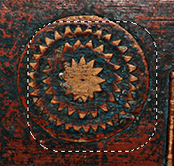

Figura 16.35. Exemplo de utilização do Retângulo arredondado em uma seleção

Uma imagem com uma seleção

Depois de executar “Retângulo arredondado”
O comando “Retângulo arredondado” converte a exibição de uma seleção já existente (retangular, elíptica ou de outra forma qualquer) em uma seleção com cantos arredondados. Se a seleção não for retangular, a sua forma inicial é perdida: ela sempre é transformada no menor retângulo que poderia conter a seleção original. Em seguida, os cantos são tornados curvos, podendo ser curvos para dentro (côncavos), ou para fora (convexos). Para fazer isto, o comando adiciona ou remove círculos dos cantos da seleção.
- Raio (%)
-
Você pode entrar entrar com o valor do raio em raio através da caixa de entrada ou pelo controle deslizante. Este valor um percentual da altura ou dalargura da seleção atual, o que for menor.
- Côncavo
-
Se você selecionar esta caixa, os cantos se tornarão côncavos (curvas para dentro), em vez de convexo (curvas para fora).